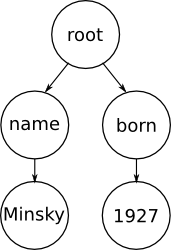

SIREn is a high-performance, full-featured semi-structured text search engine
library.
Introduction
The SIREn core API is extending the Lucene framework to provide indexing
and searching of arbitrary JSON documents.
Data Model behind SIREn
SIREn adopts an abstract tree model to represent semi-structured information.
Common examples of tree-based models are XML and JSON. While the
abstract tree model of SIREn could be used to index and search XML or JSON
documents, the SIREn API has been developed around the JSON data format. JSON
structure is simpler and therefore can be processed more efficiently, is more
easier to read by human, and is closer to the object-oriented model.
Abstract Tree Model
Each document in SIREn is represented as a tree, the root node of the tree
being the top-level object (which can be seen as the JSON document). The
child nodes of the root represent the fields associated to the top-level
object. The child nodes of a field node represent the values associated
to this field. A value can either be a:
- a primitive value: string, number, boolean;
- an array; or
- an object.
For example, the following JSON object
{
"name" : "Minsky",
"born" : 1927
}
can be represented as the following tree model

A field associated to an array is represented as a node with multiple child
nodes, one child node per value in the array. In the case of nested arrays,
one nested array is represented by a blank node with one or more child nodes.
For example, the following JSON object
{
"array" : [ 1, 2, [ 3, 4 ], 5 ]
}
can be represented as the following tree model
Similarly, a nested object is represented using a blank node with one or more
child nodes, one child node per field. For example, the following JSON object
{
"name" : "Alice"
"knows" : { "name" : "Bob" }
}
can be represented as the following tree model
Node-Labelled Tree Model
SIREn adopts a node-labelled tree model to capture the relation between the
nodes of a tree. A node-labelled tree model enables one to encode
and efficiently establish relationships between the nodes
of a tree. The two main types of relations are Parent-Child and
Ancestor-Descendant which are also core operations
in XML query languages such as XPath. To support these relations, the
requirement is to assign to each node unique identifiers that encode
the relationships between the nodes. To do so, SIREn uses the Dewey Order
encoding labelling scheme.
In Dewey Order encoding, each node is assigned a vector that represents the
path from the tree’s root to the node and each component of the path
represents the local order of an ancestor node. Using this labelling scheme,
structural relationships between elements can be determined efficiently. An
element u is an ancestor of an element v if label(u) is a prefix of label(v).
For example, the figure below depicts a data tree where nodes have been
labelled using Dewey’s encoding. Given the term 'Minsky' labelled with
[1.1.1], we can check that the term 'name' labelled with [1.1] belongs to
its parent node.
Query Model
SIREn provides two types of query operators: the first one is a set of query
operators over the content of the tree, the second one is a set of query
operators over the structure of the tree.
Content Operators
The content operators are the only ones that access the content of a node
and are orthogonal to the structure operators. In fact, the content operators
are a one to one mapping to the original Lucene query operators.
The atomic search element is a keyword. Multiple keywords can be combined
with traditional keyword search operations. Such operations include boolean
operators (intersection, union, difference), proximity operators (phrase),
fuzzy or wildcard operators, range operators, etc. These operators give the
ability to express complex keyword queries.
In contrast to Lucene where a keyword query is meant to retrieve a
particular set of documents, a keyword query in SIREn is used to retrieve a
particular set of nodes.
Also, the content operators allow to restrict keyword search to a particular
set of nodes using node constraints. A node constraint is either
a constraint on the level (in the tree) of the node or an interval constraint
on the node label. An interval constraint on the node label matches all
node labels that occurs in the inclusive interval.
Structure Operators
The structure operators are accessing the structure of the data tree. The
atomic search element is a node. Multiple nodes can be combined using tree
and set operators. The tree operators, i.e. the Ancestor-Descendant and
Parent-Child operators, allow to query node relationships and to retrieve
the paths matching a given pattern. The combination of paths are possible
using set operators.
- Ancestor-Descendant: A node A is the ancestor of a node D if there
exists a path between A and D. The operator checks the node labels and
retains only relations where the label of A is a prefix of the label of D.
- Parent-Child: A node P is the parent of a node C if P is an
ancestor of C and C is exactly one level above P. The operator checks the
node labels and retains only relations where the label of P is the longest
prefix matching the label of C.
- Set manipulation operators: These operators enable the
manipulation of nodes as sets, implementing union, difference and
intersection.
Implementation of the Model
We describe in this section how the tree model is implemented on top of an
inverted index. We first describe how we extend the inverted index data
structure before explaining the query processing algorithms.
Node-Based Inverted Index
An inverted index is composed of (1) a lexicon, i.e., a dictionary of terms
that allows fast term lookup; and (2) of a set of inverted lists, one
inverted list per term. In a node-based inverted index, the node labels, or
Dewey’s vectors, that are associated with each term are stored within the
inverted lists. Compared to the traditional Lucene inverted index, the
difference is situated in the structure of the inverted lists. Originally,
an inverted list is composed of a list of document identifiers, a list of
term frequencies and a list of term positions. In our implementation, an
inverted list is composed of:
- a list of document identifiers;
- a list of node frequencies, a node frequency corresponds to the number
of nodes where the term has been mentioned;
- a list of node labels;
- a list of term frequencies, a term frequency is relative to a node label
and corresponds to the number of times the term has been mentioned in a node;
- a list of term positions, a term position is relative to a node label
and correponds to the position of the term within the node.
Query Processing
The evaluation of a query works in a bottom-up fashion. First, matching on
the content (terms) of a node is performed, then node information is used
during list intersection for filtering the result candidates that do not
belong to a same node or branch of the tree.
The intersection of two inverted lists is the most common operation during
query processing. For example, a content operator such as the boolean
intersection and phrase proximity operators relies on a list intersection.
The structure operators such as the Ancestor-Descendant, Parent-Child and
boolean intersection operators also rely on list intersection. The
methodology is identical for all of them and is described by the following
merge algorithm:
- The inverted list of each term is retrieved.
- We position the pointers to the first element of each inverted list.
- We then walk through the inverted lists simultaneously. At each step, we
perform the following operations:
- We first compare their document identifiers. If they are not equal, we
move forward the list pointer with the smallest identifier to its next
position.
- We then compare their node labels. If the comparison is positive, we
add the document identifier and node label to the result list and we
advance the list pointers to their next position. If the comparison is
negative, we move forward the list pointer with the smallest identifier to
its next position.
However, the comparison between node labels that is performed at step
3.2 is slightly different depending on the query operator employed. In the
case of a boolean intersection between two words, the comparison is based on
the equality of the node labels. In the case of a proximity operator, the
position information is additionally compared. Concerning Ancestor-Descendant
and Parent-Child operators, the comparison is based on the label prefix
matching between the ancestor node label and child node label.
Overview of the SIREn API
The SIREn API is divided into several packages:
- {@link org.sindice.siren.analysis} defines an API
for converting JSON data into a
{@link org.apache.lucene.analysis.TokenStream TokenStream}. The JSON data
are converted into an abstract tree model and metadata information related
to the tree structure (i.e., node labels, node datatypes) are attached to
the tokens.
- {@link org.sindice.siren.index} provides an abstraction over the
encoding and decoding of the node-based inverted index structure.
- {@link org.sindice.siren.search} provides a programmatic API
to build queries to search for individual words
(i.e., {@link org.sindice.siren.search.node.NodeTermQuery}), for phrases
(i.e., {@link org.sindice.siren.search.node.NodePhraseQuery}) or for boolean
combinations of queries
(i.e., {@link org.sindice.siren.search.node.NodeBooleanQuery}) within a
node of the JSON data tree. It also provides more advanced API to combine
queries into a tree query
(i.e., {@link org.sindice.siren.search.node.TwigQuery}).
- {@link org.sindice.siren.similarity} provides ranking models that
can be used in SIREn to order documents by relevance to a query.
- {@link org.sindice.siren.util} contains a few handy data
structures and util classes that are used across the project.
How to use SIREn
Please refer to the siren-demo
module. It includes some simple examples of code:
- SimpleIndexer
configures the SIREn codec and creates an index for the provided JSON documents.
- SimpleSearcher
executes various search queries over the index.